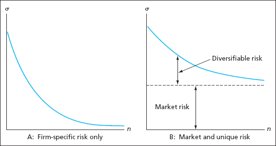
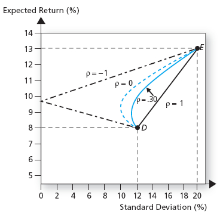

Portfolio Optimization
Types of Risk
We classify risk using two broad categories.
- Systematic risk (also called market or non-diversifiable risk) which
is common to all assets in the market.
- Idiosyncratic risk (also called firm-specific, non-systematic or
diversifiable risk) which is unique to a particular asset.
Benefits of Diversification
Idiosyncratic risk can be eliminated through portfolio
diversification.
- Imagine holding one stock in your portfolio. The risk of your
portfolio will be equal to the sum of the stock’s systematic and
idiosyncratic risks.
- Now add another stock to the portfolio. If the two stocks are
perfectly correlated, then they will always move together and your
portfolio will have the same risk properties as before.
Benefits of Diversification
Benefits of Diversification
Limits to Diversification
Adding more and more assets to a portfolio compounds the
diversification effect.
- In theory, it should be possible to eliminate all idiosyncratic risk
by increasing the number of assets in a portfolio.
- Systematic risk, however, cannot be eliminated since it is common to
all assets.
Limits to Diversification
\(\qquad\)

Portfolios of Two Risky Assets
Suppose you can invest in two risky assets.
- A debt asset (bonds) denoted by \(D\).
- An equity asset (stocks) denoted by \(E\).
- \(\omega_d\) is the fraction of wealth invested in \(D\).
- \(\omega_e\) is the fraction of wealth invested in \(E\).
- We require \(\omega_d + \omega_e = 1\), so that \(\omega_e
= 1 - \omega_d\).
Returns to Portfolios of Risky Assets
Suppose the returns to \(D\) and \(E\) are \(r_d\) and
\(r_e\), respectively.
- The portfolio return is the weighted average of returns
\[r_p = \omega_d r_d + \omega_e r_e.\]
- By the properties of expectations, the portfolio expected return is
\[\mu_p = \omega_d \mu_d + \omega_e \mu_e.\]
- By the properties of variance, the portfolio variance is
\[\sigma^2_p = \omega^2_d \sigma^2_d + \omega^2_e \sigma^2_e + 2
\omega_d \omega_e Cov(r_d, r_e).\]
Covariance Matrix
It is often useful to express the variance and covariance information
in matrix form
\[\begin{split}\Sigma = \left[\begin{array}{cc} \sigma^2_d & \sigma_{d,e}
\\ \sigma_{e,d} & \sigma^2_e \end{array} \right],\end{split}\]
where \(\sigma_{d,e} = \sigma_{e,d} = Cov(r_d, r_e)\).
- \(\Sigma\) is referred to as a covariance matrix.
- It can be generalized to more than two assets.
- The diagonal terms always represent variances.
- The off-diagonal terms represent covariances.
Correlation
Define \(\rho_{xy} = Corr(X,Y)\). Then recall that
\[\rho_{xy} = \frac{Cov(X,Y)}{\sigma_x \sigma_y}.\]
- Hence, \(Cov(X,Y) = \rho_{xy} \sigma_x \sigma_y\).
- Remember that \(\rho_{xy} \in [-1,1]\).
Portfolio Variance
The previous relationship allows us to write portfolio variance as
\[\begin{split}\sigma^2_p & = \omega^2_d \sigma^2_d + \omega^2_e \sigma^2_e + 2
\omega_d \omega_e \rho_{de} \sigma_d \sigma_e.\end{split}\]
- Since \(\rho_{de} \in [-1,1]\), \(\sigma^2_p\) is greatest
when \(\rho_{de} = 1\). Why?
- Note that when \(\rho_{de} = 1\),
\[\sigma^2_p = (\omega_d \sigma_d + \omega_e \sigma_e)^2\]
\[\Rightarrow \sigma_p = \omega_d \sigma_d + \omega_e \sigma_e.\]
Portfolio Standard Deviation
- In this special case, the portfolio standard deviation is the
weighted average of asset standard deviations.
- So the maximal possible portfolio standard deviation is the
simple weighted average of component standard deviations.
Portfolio Variance
Note that
- \(\mu_p\) is the weighted average of asset means.
- \(\sigma_p\) is less than the weighted average of asset
volatilities when \(\rho_{de} \neq 1\).
- So the risk-return properties of the portfolio are better than those
of the component assets.
Portfolio Variance Lower Bound
Portfolio variance is made smaller with smaller values of
\(\rho_{de}\).
\[\sigma^2_p = (\omega_d \sigma_d - \omega_e \sigma_e)^2\]
\[\Rightarrow \sigma_p = |\omega_d \sigma_d - \omega_e \sigma_e|.\]
- If we choose \(\omega_d = \frac{\sigma_e}{\sigma_e + \sigma_d}\)
(and \(\omega_e = 1-\omega_d\)) then \(\sigma_p = 0\).
- This means that if assets are perfectly negatively correlated, the
portfolio has zero variance.
Portfolio Variance Lower Bound

Portfolio Frontier
The lines in the figure above are known as portfolio opportunity
sets or portfolio frontiers.
- Since individuals prefer less risk and greater return, frontiers
that are bowed to the northwest are better.
- Clearly, the frontiers are better for smaller values of
\(\rho_{de}\).
Portfolios of Three Assets
Assume you can invest your money in three assets:
The portfolio frontier now consists of
- The curved frontier between the two risky assets. We will call this
the risky frontier.
- Every capital allocation line (CAL) connecting the risk-free to a
portfolio on the risky frontier.
- Steeper CALs are better since they offer portfolios of equivalent
expected return with lower standard deviation.
Optimal CAL
The optimal CAL is the steepest possible line that intersects both the
risk-free asset and a portfolio on the risky frontier.
- The slope of the CAL is the Sharpe Ratio of the risky portfolio it
intersects.
- So the investor’s optimization problem is
\[\max_{\omega} SR_p = \frac{\mu_p - r_f}{\sigma_p} \quad \text{subject to}\]
\[\mu_p = \omega_d \mu_d + (1-\omega_d) \mu_e\]
\[\sigma_p = \sqrt{\omega^2_d \sigma^2_d + (1-\omega_d)^2
\sigma^2_e + 2 \omega_d (1-\omega_d) \rho_{de} \sigma_d
\sigma_e}.\]
Optimal CAL
To solve the problem we
- Substitute the constraints.
- Take the derivative with respect to \(\omega_d\) and set the
derivative equal to zero.
- Perform some tedious algebra.
Optimal CAL
The solution is
\[\begin{split}\omega_d^* & = \frac{rp_d \sigma^2_e - rp_e
\rho_{de} \sigma_d \sigma_e}{rp_e \sigma^2_d +
rp_d \sigma^2_e - (rp_e + rp_d) \rho_{de}
\sigma_d \sigma_e}.\end{split}\]
- \(rp_d = \mu_d - r_f\) and \(rp_e = \mu_e - r_f\).
- The optimal portfolio \(T\) is known as the tangency
portfolio.
Optimal CAL
The optimal CAL is the investor’s efficient choice set, since it
offers minimal variance portfolios for every choice of expected
return.
- We have said nothing about which portfolio the investor will
actually consume; we have only identified the set from which the
investor will choose.
- We must combine the optimal CAL with a specification of preferences
to determine the investor’s actual choice.
- The portfolio choice problem with three assets now reduces to the
simple problem of choosing between one risky asset (the tangency
portfolio) and the risk-free asset.
Investor Choice
Let’s assume again that agents’ utility is given by
\[\begin{split}U(\mu, \sigma) & = \mu - \frac{1}{2} \gamma \sigma^2.\end{split}\]
Recall that when allocating wealth between a risky asset \(P\) and
a risk-free asset, the optimal portfolio weight, \(\tau\), is
\[\begin{split}\tau & = \frac{\mu_p - r_f}{\gamma \sigma^2_p}.\end{split}\]
Investor Choice
If the agent invests in the tangency portfolio \(T\) and the
risk-free,
\[\tau = \frac{\mu_T - r_f}{\gamma \sigma^2_T}.\]
- Given that the tangency portfolio is a weighted average of assets
\(D\) and \(E\), with optimal weight \(\omega_d^*\)
\[\begin{split}w_d & = \tau \omega_d^* \\
w_e & = \tau (1-\omega_d^*).\end{split}\]
{kind=link}
{kind=link}
{kind=link}
{kind=link}